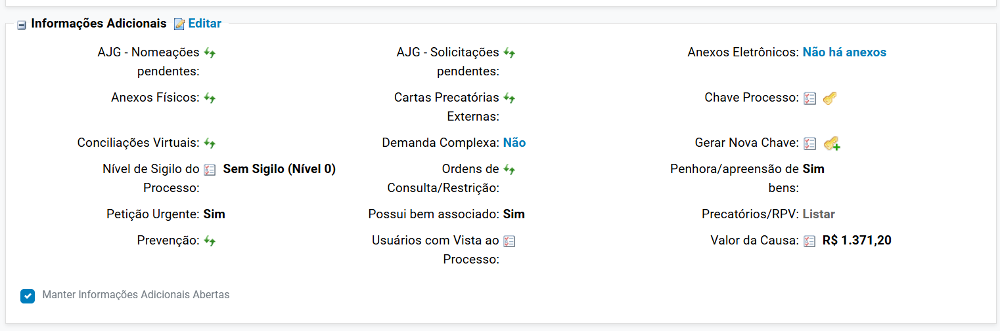
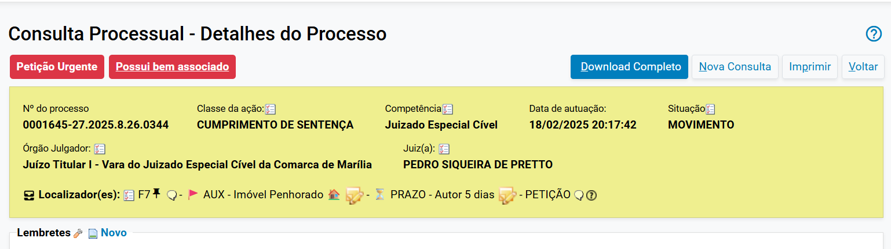

📦 Cadastro de Bens¶
⚠️ Pontos críticos — leia antes de prosseguir
Antes de cadastrar bens no processo, verifique sempre:
- Dados complementares obrigatórios → antes de cadastrar o bem, é necessário marcar "Penhora/apreensão de bens" e "Possui bem associado" como Sim nas Informações Adicionais da capa do processo
- Tipo de Localização → sempre utilizar a opção "Interna", mesmo que o bem esteja com o executado ou fora do Cartório — clicar na seta para escolher a sublocalização correta
- Perfil habilitado → apenas Chefe de Cartório e Servidor Avançado podem cadastrar e movimentar bens no sistema
- Bloqueios rápidos do SisbaJud → para valores bloqueados que serão levantados em breve, não é necessário cadastrar como bem — só cadastre se o bloqueio permanecerá por tempo significativo (ex.: tutela em processo de conhecimento)
Quando usar¶
Quando houver penhora de bens ou valores no processo — por exemplo, em hipóteses de apreensão, penhora, busca e apreensão, bloqueio prolongado de valores, entre outros.
Bloqueios via SisbaJud
Para valores bloqueados no SisbaJud que serão rapidamente levantados (ex.: bloqueio seguido de transferência imediata para conta judicial), não precisa cadastrar como bem.
Já para bloqueios que vão permanecer por algum tempo — como em uma tutela provisória no processo de conhecimento — é aconselhável cadastrar para controle.
Este procedimento também pode ser usado para itens e bens depositados em Cartório (situações excepcionais, mas que podem ocorrer), garantindo o controle patrimonial pela unidade.
Onde encontrar¶
O cadastro de bens é acessado pela capa do processo:
- Clique em "Editar" na seção Informações Adicionais

- Clique em "Incluir novo dado complementar"
- Localize os campos "Penhora/apreensão de bens" e "Possui bem associado" e coloque Sim em ambos
- Clique em Salvar
- Ao voltar à capa do processo, aparecerá a tarja "Possui bem associado" — clique sobre ela para acessar a tela de bens

Caminho alternativo
🔍 Você também pode acessar via seção Ações → botão Bens Apreendidos na capa do processo.
✅ Para o cadastro inicial de localizações internas (feito uma única vez pela unidade): Menu lateral → Bens Associados → Cadastro de Localizações Internas.
Sob demanda
Este procedimento é realizado conforme a necessidade processual — não há linha fixa no Relatório Geral.
Antes de tudo: verificações obrigatórias¶
1. As localizações internas já foram cadastradas?¶
As localizações internas identificam no sistema onde os bens estão fisicamente armazenados. É necessário cadastrá-las antes de associar qualquer bem.
Dica
🔍 Se necessário cadastrar um bem que não esteja nas dependências do Poder Judiciário (imóveis, automóveis, etc.), crie uma localização interna e identifique na descrição a localização real (ex.: "Com o Executado", "Depositário externo").
✅ O cadastro das localizações é realizado uma única vez — depois, basta reutilizá-las.
2. Você tem o perfil necessário?¶
Apenas os seguintes perfis podem cadastrar e movimentar bens:
- Chefe de Cartório (1º Grau)
- Servidor de Unidade Judicial Avançado (1º Grau)
3. Os dados complementares foram preenchidos?¶
Antes de cadastrar o bem, os campos "Penhora/apreensão de bens" e "Possui bem associado" devem estar marcados como Sim nas Informações Adicionais da capa do processo.
Sem esses dados, a tarja não aparece
Se você não preencher esses campos, a tarja "Possui bem associado" não será exibida na capa do processo. Sempre preencha antes de prosseguir.
Passo a passo¶
Passo 1 — Cadastrar localizações internas (se necessário)¶
- Acesse o Menu lateral do sistema → Bens Associados → Cadastro de Localizações Internas
- Na tela Bens Associados - Localizações Internas, clique com o botão direito sobre o nome da unidade judicial
- Selecione a opção Nova
- Preencha os campos:
- Cadastrar em: preenchido automaticamente
- Nome: informe um nome para a localização (ex.: "Cartório", "Sala de audiências")
- Quantidade máxima: indique a capacidade de bens
- Descrição: descreva a localização
- Clique em Salvar
Dica
É possível criar subníveis dentro da localização (ex.: Cartório → Estante → Caixa → Pasta). Para isso, clique com o botão direito sobre a localização criada e selecione Nova.
Passo 2 — Habilitar os dados complementares na capa¶
- Na capa do processo, clique em "Editar" na seção Informações Adicionais
- Clique em "Incluir novo dado complementar"
- Localize "Penhora/apreensão de bens" → selecione Sim
- Localize "Possui bem associado" → selecione Sim
- Clique em Salvar
- Ao voltar à capa, verifique que a tarja "Possui bem associado" apareceu
- Clique sobre a tarja para acessar a tela de Bens Associados
Passo 3 — Cadastrar novo bem¶
- Na tela Bens Associados, clique no botão Novo
- Escolha o Tipo de Bem na lista (ex.: Veículo, Dinheiro, Aparelho Eletrônico, Imóvel)
- Preencha a Descrição detalhada do bem no campo próprio
- Escolha ou digite a Data da Penhora
Passo 4 — Definir a situação do bem¶
Na lista Situação, escolha a que mais se adequa ao momento processual.
Sugestão de fluxo para controle das fases
Use as situações conforme o andamento do processo:
| Fase processual | Situação sugerida |
|---|---|
| Penhora realizada | Penhorado |
| Bem encaminhado a leilão | Em Leilão/Praça |
| Bem arrematado | Arrematado |
Usos especiais para controle:
| Situação | Quando usar |
|---|---|
| Bloqueado | Apenas bloqueio sem penhora formalizada (ex.: bloqueio SisbaJud mantido por mais tempo) |
| Desbloqueado | Desbloqueio de valores via RenaJud/SisbaJud |
| Restituído/Entregue | Levantamento da penhora — bem devolvido à parte |
Passo 5 — Definir a localização¶
- Em Tipo de Localização, selecione sempre "Interna" — mesmo que o bem esteja com o exequente/executado fora do Cartório
- Clique na pequena seta branca ao lado da pasta para abrir as opções de sublocalização
- Escolha a localização correspondente (ex.: Com o Executado, Removido ao Exequente, Cartório)
Passo 6 — Preencher informações adicionais¶
- Clique em Informações Adicionais
- No campo Destinação Final, após arrematação/adjudicação/levantamento da penhora, escolha a destinação que o bem teve
- Em Eventos/Documentos, clique em Adicionar evento para vincular o auto de penhora ou documento relacionado
- Em Partes, selecione a parte proprietária do bem
- Se houver foto do bem, anexe (opcional)
Passo 7 — Concluir o cadastro¶
- Clique no botão Cadastrar
Pronto!
O bem foi cadastrado e será exibido na tela de Bens Associados do processo. ✅
Lançamento de fases (acompanhamento)¶
Após o cadastro, é possível registrar a evolução do bem ao longo do processo, criando um histórico de fases para controle.
- Na tela de Bens Associados, localize o bem na lista
- Clique no ícone Lançar fase na linha do bem
- Informe a nova fase em que o bem se encontra
Exemplos de fases que podem ser lançadas
- Juntada de avaliação
- Encaminhado para leilão
- Em leilão/praça
- Arrematado
- Entregue à parte interessada
- Levantamento da penhora
Dica
🔍 Use o lançamento de fases para manter um histórico completo de tudo que aconteceu com o bem — isso facilita o acompanhamento, especialmente em processos que demoram.
✅ O registro de fases é opcional, mas muito recomendado para penhoras que envolvem leilão ou múltiplas movimentações.
Checklist final¶
Use esta lista para garantir que nada foi esquecido:
- Verificado se as localizações internas já estão cadastradas
- Perfil habilitado (Chefe de Cartório ou Servidor Avançado)
- Localização interna criada (se necessário)
- Dados complementares preenchidos ("Penhora/apreensão de bens" e "Possui bem associado" = Sim)
- Tarja "Possui bem associado" visível na capa do processo
- Botão "Novo" acionado na tela Bens Associados
- Tipo de Bem selecionado
- Descrição do bem preenchida
- Data da penhora informada
- Situação escolhida conforme a fase processual
- Tipo de Localização definido como "Interna"
- Sublocalização selecionada (seta branca → opção correspondente)
- Informações Adicionais preenchidas (Destinação Final, Eventos, Partes)
- Botão "Cadastrar" clicado
- Fases lançadas conforme evolução do bem (quando aplicável)